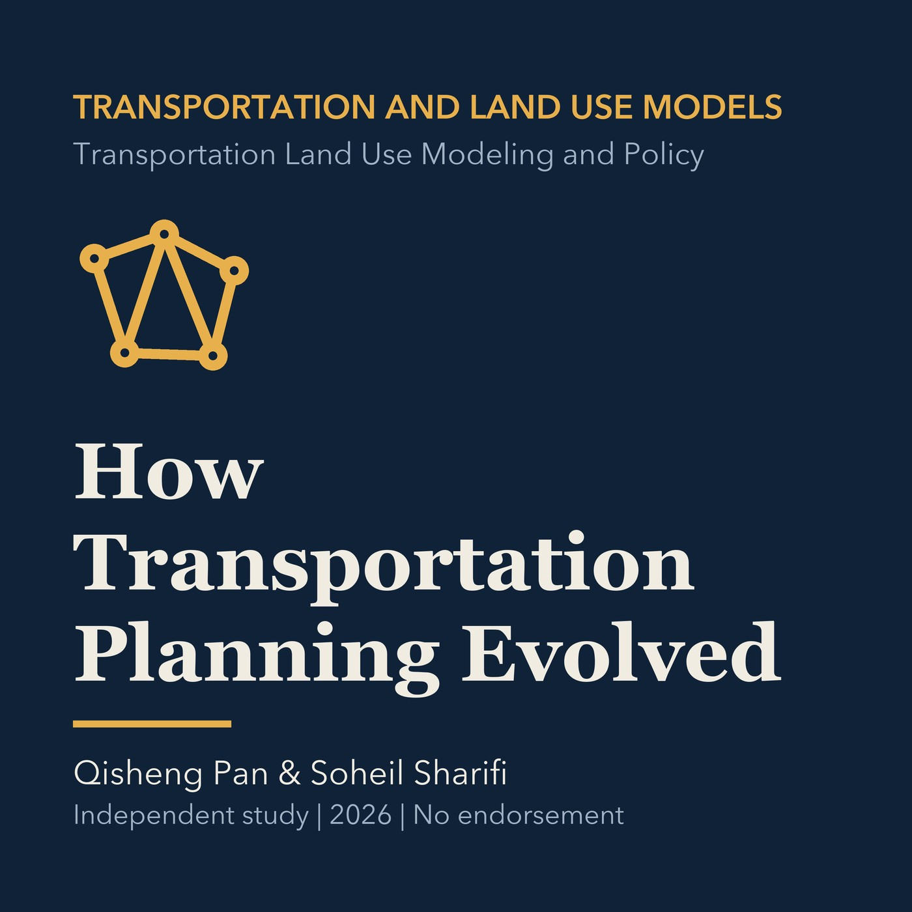

EPISODE 02
How Urban Transportation Planning Evolved
Connects transport technologies, urban form, automobile growth, and contemporary planning issues before applying the history to Torrance.

- Stable GUID
e5f00e71-44da-5ac4-a374-8f456a99b441- Release
- transportation-land-use-modeling-v2026.2
- SHA-256
9b46f200a0ea1215356b0aec789294bbee10597b994192207968f9e313a833b4